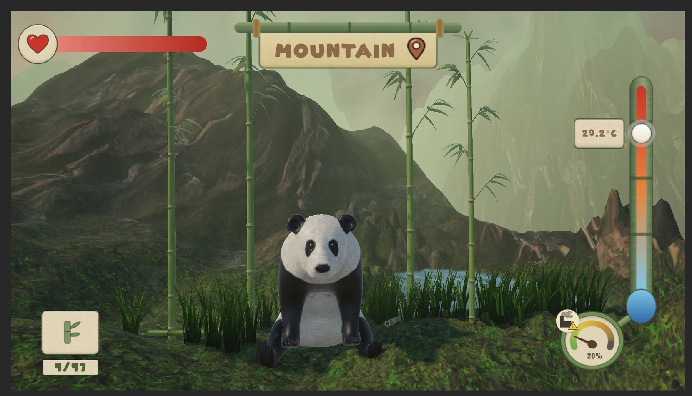
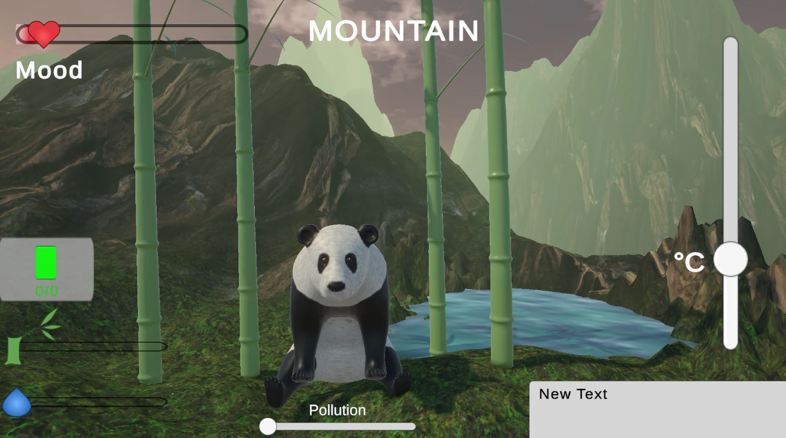
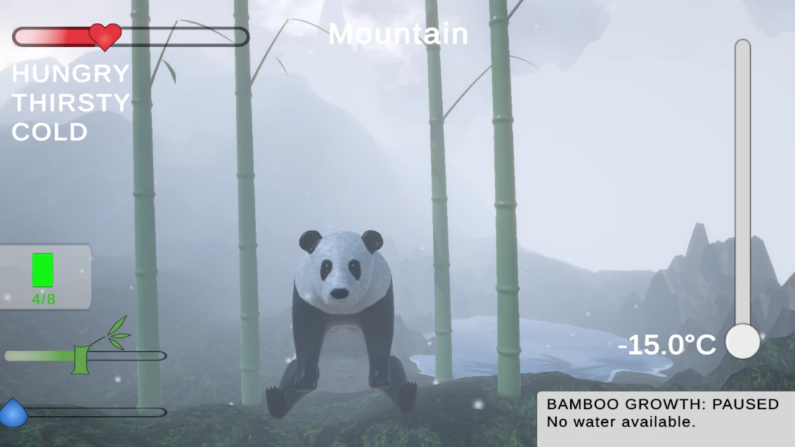
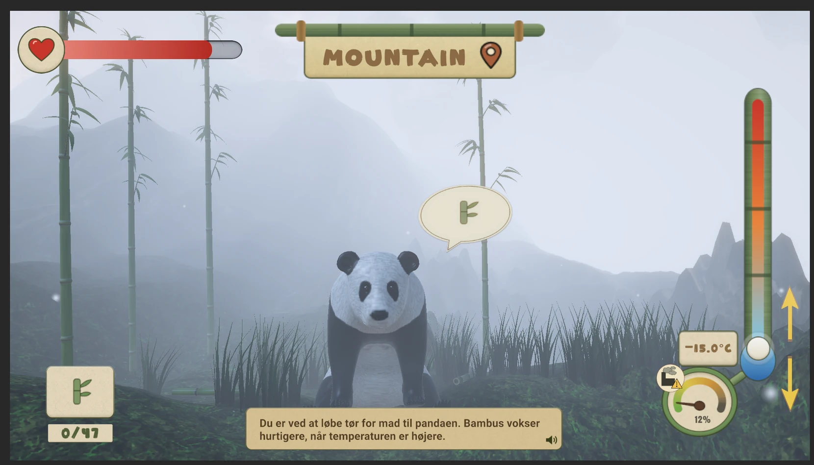
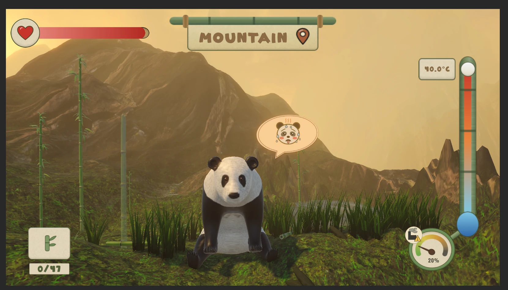
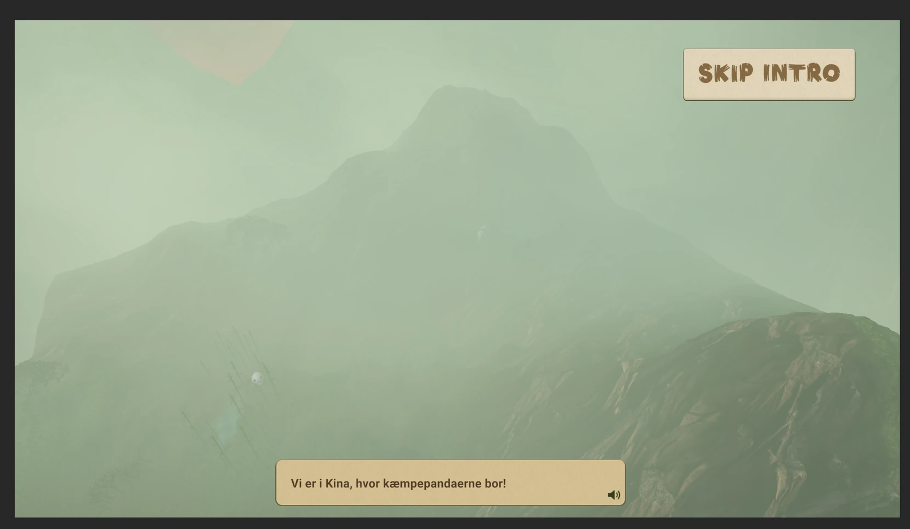
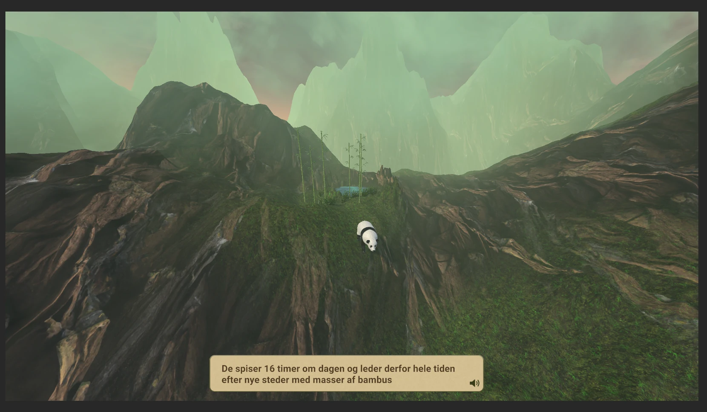
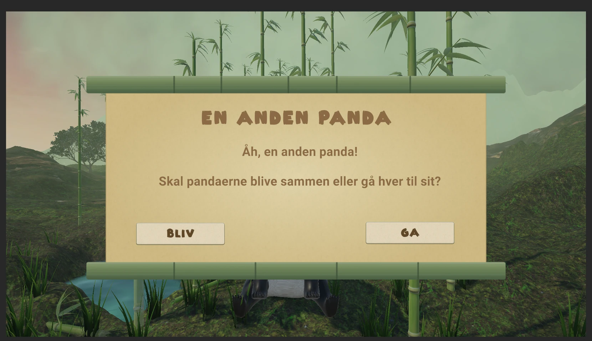
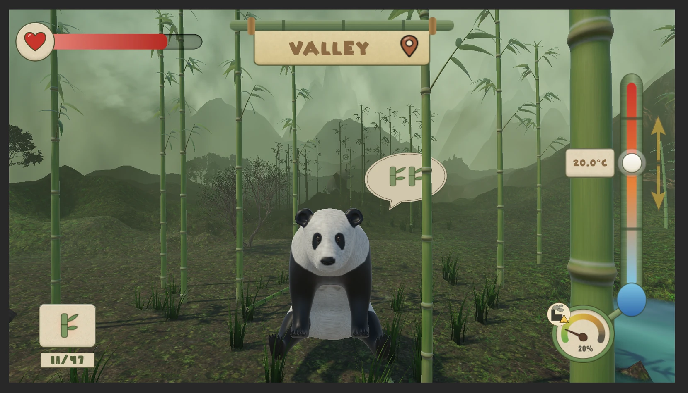

Koncept og prototyper i Figma
I Figma skitserede gruppen brugerfladen, dilemmaerne og sammenhængen mellem spillets systemer. Skitserne viser blandt andet temperaturkontrol, status for vand og bambus samt valgskærme.
Vi udviklede et interaktivt Unity-spil, hvor spilleren passer en panda og tager stilling til dilemmaer i dens levested.

Projektet undersøger, hvordan zoogæster spiller, hvad de forstår om pandaens levested bagefter, og om de oplever spillet som en afsluttet fortælling.
Gruppen skitserede brugerfladen og spillets systemer i Figma og byggede en spilbar prototype i Unity. Prototypen kombinerer pasning af pandaen med valg, som påvirker, hvilke hændelser og slutninger spilleren møder.
Gruppen byggede blandt andet en temperaturkontrol, indikatorer for pandaens behov og dialogbokse med valg i fortællingen.
Gruppen brugte Trello til blandt andet at planlægge design, implementering og evaluering. Datoerne i oversigten følger den tilgængelige projektdokumentation.
| Dato | Fokus | Dokumentation |
|---|---|---|
| Tidlig spilvisning i Unity | Prototypeskærme samlet i Development Pictures | |
| Design og testforberedelse | Gennemgang af Figma-prototype og Trello-opgaver om blandt andet brugerflade, telemetri og evaluering | |
| Spillets forløb og feedback | Screenshots af intro, temperatur, områdeskift og et dilemma |
I Figma skitserede gruppen brugerfladen, dilemmaerne og sammenhængen mellem spillets systemer. Skitserne viser blandt andet temperaturkontrol, status for vand og bambus samt valgskærme.
I en tidlig prototypevisning står der stadig “New Text” i beskedfeltet. En anden visning giver spilleren en forklaring på, hvorfor bambussen er holdt op med at vokse. Det gør forbindelsen mellem vand og bambusvækst synlig i brugerfladen.


Temperaturslideren giver spilleren en direkte måde at påvirke miljøet på. I novemberversionen kan man se tilstanden på slideren og i scenens farver. I den kolde visning får spilleren også en besked om sammenhængen mellem temperatur og bambusvækst.


Den spilbare prototype går fra en kort introduktion til pasning af pandaen og valg undervejs. Billeder fra en gennemspilning den 16. november viser, hvordan spillet skifter mellem fortælling, områdeovergange og interaktive valg.




Hent Unity-projektet fra linket øverst på siden. Åbn projektet i Unity Hub med den version, der står i ProjectSettings/ProjectVersion.txt. Åbn Assets/Scenes/StartMenu.unity i editoren, og tryk Play for at starte fra spillets menu.
Spillerens valg påvirker, hvilke dilemmaer og slutninger der vises. Spillere kan derfor have set forskelligt indhold, når de besvarer spørgsmål efter spillet.